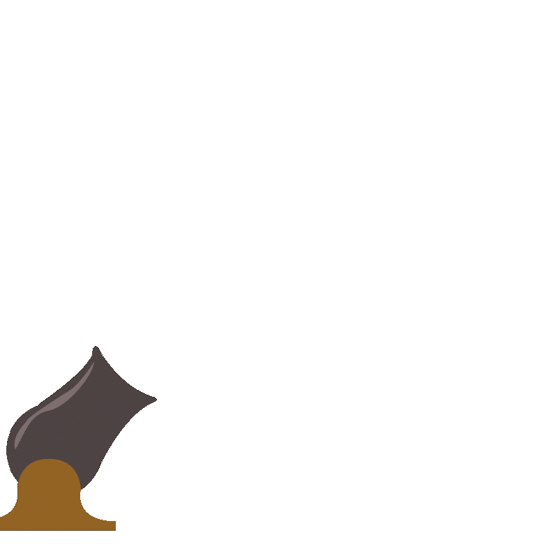

LOADING ASSETS... 0%
GENEROWANIE ŚWIATA... 0%
Play
CHAT · ENTER ABY WYSŁAĆ
1/10
1.
2.
3.
4.
5.
6.
LOGOWANIE
REJESTRACJA
ZALOGUJ SIĘ
NAZWA GRACZA:
⌨
email
points
totalpoints
WYLOGUJ
Connecting…
‹
›
▶ DOLACZ DO GRY
SERWERY
LOADING…

Congratulations
You earned
1000 Gold!
Respawn in
1.0s
⟳ RESPAWN ON THIS LEVEL
